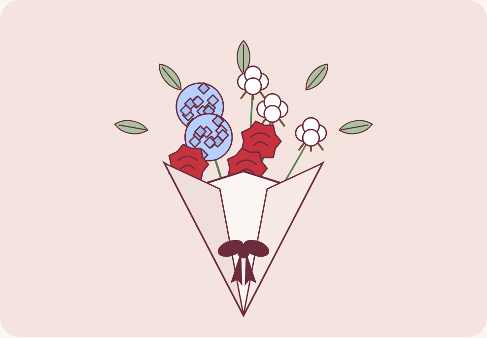

엄마에게
“엄마 키워줘서 고마워요”
쑥스러워서 미뤄 둔 "고마워요"를 꽃말로 대신 전해요. 빨간 카네이션의 존경, 수국의 진심, 목화의 "어머니의 사랑"을 한 다발에 담았어요.
- 어버이날이 아니어도 좋아요. 평범한 날의 꽃이 더 오래 기억돼요.
- 매장 픽업을 선택하면 직접 들고 찾아갈 수 있어요.
- 편지에는 구체적인 추억 하나를 적어 보세요.

엄마에게
쑥스러워서 미뤄 둔 "고마워요"를 꽃말로 대신 전해요. 빨간 카네이션의 존경, 수국의 진심, 목화의 "어머니의 사랑"을 한 다발에 담았어요.